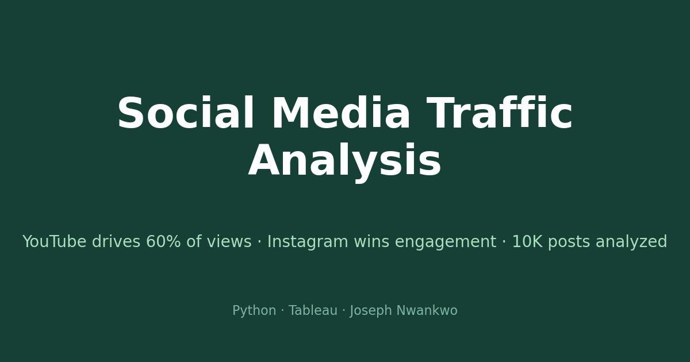

At a glance: Python (pandas, matplotlib) + Tableau Public · 10,000 posts, 15 fields (platform, content type, topic, timestamps, views, likes, comments, shares, engagement rate, virality) · key finding: YouTube drives 60% of all views, but Instagram leads engagement at 0.15 with a 67% viral rate.
Explore the live interactive dashboard on Tableau Public ↗
The data.
Open data covering 10,000 social media posts from across 2025, spread evenly over YouTube, Instagram, Medium, and LinkedIn (2,500 posts each). Every record carries views, likes, comments, shares, an engagement rate, a virality flag, plus content type, topic, sentiment score, and timestamp. Clean throughout — no missing values.
Traffic vs. engagement: the central tension.
YouTube is the traffic king: 1.29 billion total views, averaging 516K per post. But its engagement rate is the lowest of the four platforms (0.09). Instagram tells the opposite story — far less traffic, yet the highest engagement rate (0.15) and the highest viral rate (67% of posts flagged viral). The lesson for anyone planning content: reach and resonance are different games, and the platform you pick decides which one you are playing.
Format matters more than tone.
Video averages 433K views per post — the top content format by a wide margin. Sentiment, meanwhile, barely moves the needle: its correlation with engagement is just 0.21. What you make beats how positive it sounds.
Timing.
Traffic is not flat across the year. August 2025 was the clear peak at 205M views, with April and October also running hot. Topics are surprisingly even — Sports, Entertainment, and Technology lead, but no single topic dominates.
Viral posts earn roughly 3x the likes and shares of non-viral posts — yet their view counts are nearly identical. Engagement depth, not reach, is what separates a viral post from an ordinary one.
What is next.
Predicting virality before posting — the natural follow-up is a classification model on content type, topic, timing, and platform. That is the next project in this series.